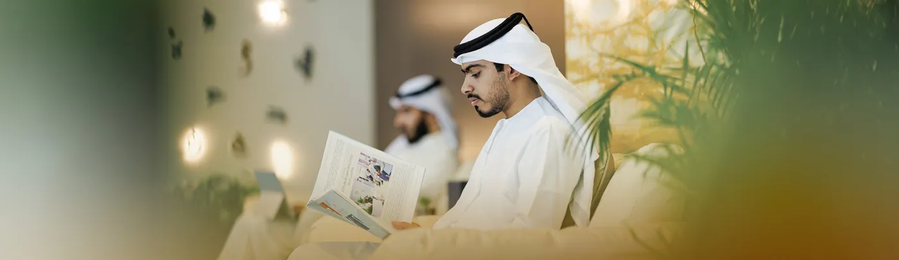
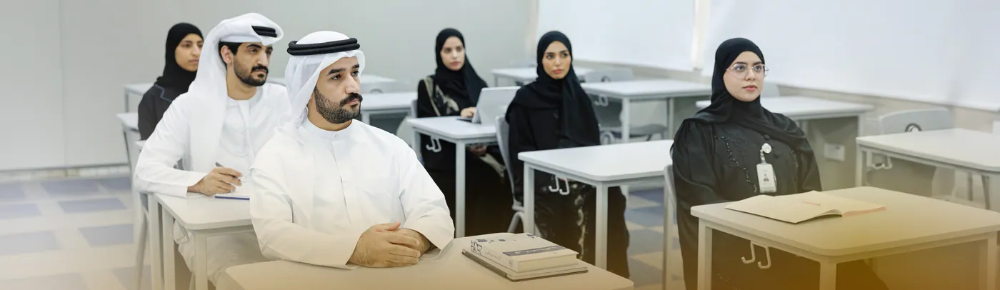
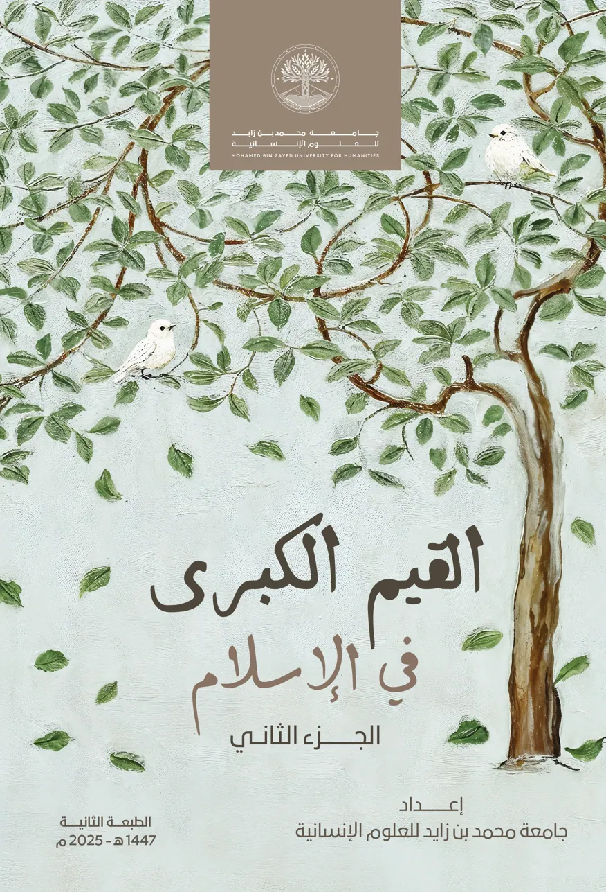
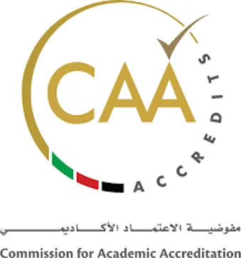
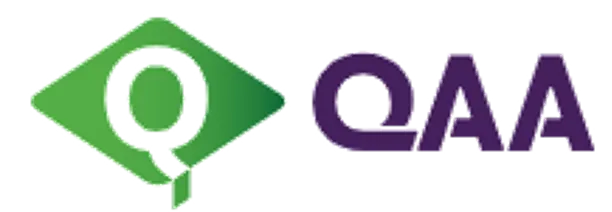
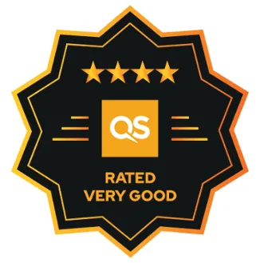
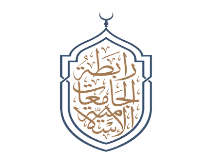
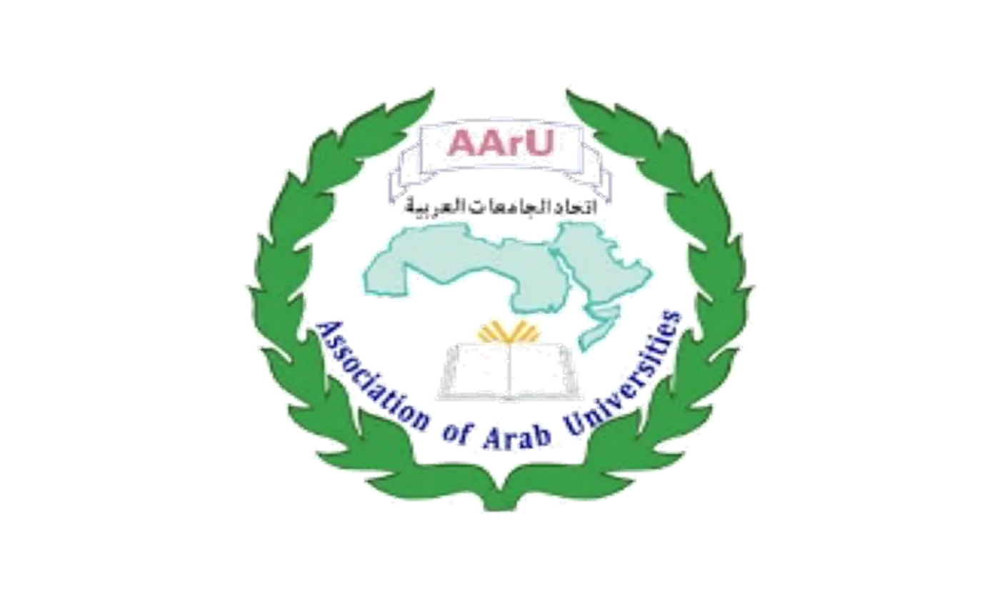
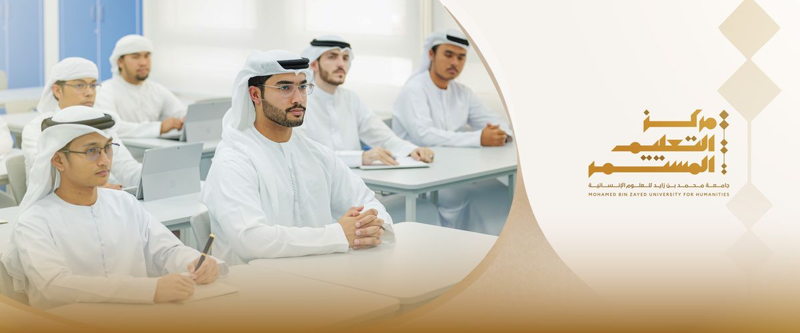

إعداد قادة المستقبل في العلوم الإنسانية
إحدى الجامعات الحكومية الرائدة في أبوظبي التي تعزز الثقافة الإسلامية والعربية بشكلها الحديث، وتعزز احترام حقوق الإنسان والانسجام والاعتدال.
أرقام دقيقة محسوبة من صفحات الكليات على الموقع الرسمي (نُسخت في 6 أكتوبر 2026).
اسأل، وسنجيبك من محتوى الموقع
البرامج، شروط القبول، الفروع، المواعيد… يجيب المساعد من نصوص الموقع الرسمي فقط، بالكتابة أو بالصوت.
مساعد تجريبي يجيب من محتوى الموقع فقط.
أرقام من محتوى الموقع
كل رقم هنا محسوب من العناصر المنشورة فعلياً على الموقع الرسمي — بدون تقديرات. مرّر أو اضغط على أي رقم لمعرفة طريقة حسابه.
عن الجامعة
جامعة محمد بن زايد للعلوم الإنسانية هي جامعة حكومية في إمارة أبوظبي، تهدف لتكون مركزاً أكاديمياً في مجال العلوم الإنسانية والاجتماعية والفلسفية، لتقدم الإسلام والثقافة العربية بصورتها الحضارية المبنية على احترام حقوق الآخرين والاعتدال والوسطية، كما تطرح برامج البكالوريوس والدراسات العليا في اللغة العربية وآدابها، وفي الدراسات الإسلامية بفروعها، وتمكن الخريجيين من الانفتاح على العالم بعقلية مبدعة، وبفكر تحليلي، وروح إيجابية، وترسيخ للقيم والأواصر الاجتماعية. يقع المقر الرئيسي للجامعة في أبوظبي، ولها فرع في عجمان وفرع في الظفرة.
نسهم في بناء مستقبل معرفي إنساني مستدام ضمن بيئة تعليمية وبحثية متقدمة ترسّخ القيم الإنسانية وتعزز الهوية الوطنية، وتطوّر الكفاءات الفكرية والدينية القادرة على الابتكار والريادة عالمياً.
إرث زايد
المحافظة على إرث الشيخ زايد واستلهام الدروس والعبر منه.
التسامح والتعايش
جعل قيم التسامح معياراً عملياً للمحتوى الأكاديمي والطلاب، واحترام التنوع والاختلاف، ونشر السلم والسلام، وتأصيل الاعتدال الفكري في المناهج التعليمية.
الأخوة الإنسانية
ترسيخ الأخوة الإنسانية ومبادئ العيش المشترك بين الشعوب والثقافات واستشعار عمقها الحضاري وأهميتها.
لماذا جامعة محمد بن زايد للعلوم الإنسانية؟
- تحقيق التميز الأكاديمي
- بناء قيادات فكرية معاصرة
- مرجع معتمد للمناهج الدراسية
- تعزيز الإستدامة المالية
- بناء وتعزيز العلاقات المحلية والدولية
- تحقيق التميز المؤسسي
تأسست جامعة محمد بن زايد للعلوم الإنسانية كجزء من رؤية قيادة دولة الإمارات العربية المتحدة لتوفير تعليم عالٍ عالمي المستوى سينتج خريجين متميزين سيساعدون في تحقيق أهداف التنمية في البلاد والمساهمة بشكل كبير في تقدم المجتمع الإنساني.
أنشأت الجامعة برنامجاً شاملاً يسعى لتزويد الطلاب بالمعرفة والمهارات والقيم المناسبة التي ستساعدهم على تحقيق النجاح وأن يصبحوا قادة في مختلف مجالات المساعي.
نحن نمكن طلابنا من التواصل وتبادل الأفكار بثقة باللغة العربية ولغات أخرى (الإنجليزية)، مما يمكنهم من الانخراط في الحوار والمساهمة بأفكار للمساعدة في تطوير المعرفة أو تطوير حلول تعالج التحديات الملحة للبشرية.
جرّب الجامعة بطريقة مختلفة
تجارب تفاعلية مبنية على محتوى الموقع الحقيقي — تعمل كلها داخل متصفحك.
كلمات الترحيب
كلمات ترحيبية من قيادة الجامعة — نتطلع معاً إلى تحقيق التميز الأكاديمي والريادة في العلوم الإنسانية

“في فضاءات المعرفة تشرق جامعة محمد بن زايد للعلوم الإنسانية في سماء دولة الإمارات منارةً علميةً راسخة، وصرحاً معرفياً شامخاً، ومختبراً بحثياً ونهض برسالة حضارية عالمية، ويصوغ المستقبل، ويحمل أمانة القيم والهوية الوطنية.”
اقرأ الكلمة كاملة ←
“يطيب لي أن أرحب بكم في جامعة محمد بن زايد للعلوم الإنسانية، أول جامعة متخصّصة في العلوم الإنسانية في دولة الإمارات العربية المتحدة، تلك الجامعة التي استطاعت خلال فترة وجيزة أن تقوم بدور ريادي وبارز.”
اقرأ الكلمة كاملة ←عمداء الكليات


البرامج الأكاديمية
اكتشف مجموعتنا الشاملة من برامج البكالوريوس وبرامج الدبلوم والماجستير والدكتوراه المصممة للنهوض بالمعرفة في العلوم الإنسانية والدراسات الإسلامية.

كلية الدراسات الإسلامية
كلية الدراسات الإسلامية في جامعة محمد بن زايد للعلوم الإنسانية بأبوظبي، الإمارات العربية المتحدة، تسعى إلى تحقيق التميز في تخصصات الدراسات الإسلامية، وتعزيز قيم الإسلام الوسطي المعتدل بما يتوافق مع رؤية الدولة. تقدم الكلية برنامج البكالوريوس في الدراسات الإسلامية الذي يجمع بين عمق المعرفة الشرعية وانفتاحها على العلوم الإنسانية والتكنولوجيا الحديثة، بهدف إعداد جيل مؤهل علمياً وأخلاقياً، قادر على خدمة المجتمع والانخراط في سوق العمل والبحث العلمي.
استكشف الكلية ←
كلية العلوم الاجتماعية والإنسانية
تسعى كلية العلوم الاجتماعية والإنسانية في جامعة محمد بن زايد للعلوم الإنسانية إلى تحقيق الريادة والتميز في بيئة تعليمية تتسم بالاعتدال والتسامح. تقدم الكلية برامج متميزة تشمل بكالوريوس الآداب في الفلسفة والأخلاق، وبكالوريوس الدراسات الاجتماعية في التسامح والسلام. وتهدف إلى تزويد الطلاب بمعرفة متينة ومهارات التفكير النقدي والإبداعي، وتعزيز قيم الانتماء والمواطنة والمسؤولية الاجتماعية، وتأهيلهم لسوق العمل والدراسات العليا.
استكشف الكلية ←
كلية الآداب واللغات
تُعنى كلية الآداب واللغات في جامعة محمد بن زايد للعلوم الإنسانية بدراسة اللغة العربية واللسانيات والأدب والدراسات الثقافية، وتهدف إلى تنمية مهارات التواصل والتحليل والبحث لدى الطلبة، وتعزيز الوعي الثقافي والتفاعل مع التراث الإنساني
استكشف الكلية ←
كلية الدراسات العليا
تُقدّم كلية الدراسات العليا والبحث العلمي في جامعة محمد بن زايد للعلوم الإنسانية برامج أكاديمية متقدمة وتعزز البحث العلمي في مجالات الفلسفة والدين والأخلاق والعلوم الإنسانية، وتهدف إلى تنمية التفكير النقدي والابتكار والتميز الأكاديمي، وإعداد الطلبة للمجالات الأكاديمية والبحثية والمهنية
استكشف الكلية ←مستعد لبدء رحلتك؟
انضم إلى مجتمع الباحثين المميز في رحاب جامعة محمد بن زايد للعلوم الإنسانية.
رحلة القبول خطوة بخطوة
المتطلبات الأساسية للتقديم مرتبة في خطوات واضحة.
- 1الشهادة الثانوية
الحصول على شهادة الثانوية العامة أو ما يعادلها. الشهادات الصادرة من خارج الدولة أو من نظام غير تابع لوزارة التربية والتعليم تتطلب معادلة رسمية من الوزارة.
- 2اللغة العربية
درجة لا تقل عن (75) في مادة اللغة العربية في الثانوية العامة، أو اجتياز اختبار اللغة العربية الخاص بالجامعة.
- 3المعدل العام
تحقيق الحد الأدنى من المعدل بحسب نوع الشهادة — مثلاً 70% لمسار النخبة والمسار المتقدم، و80% للمسار العام ومدارس ATS.
- 4المقابلة الشخصية
اجتياز المقابلة الشخصية.
- 5قدّم طلبك
التقديم عبر بوابة القبول الإلكترونية.
- 1المؤهل الأكاديمي
الماجستير: بكالوريوس في تخصص ذي صلة بمعدل تراكمي لا يقل عن 3.0 من 4.0. الدكتوراه: ماجستير في تخصص ذي صلة بمعدل لا يقل عن 3.0.
- 2اللغة
اجتياز اختبار اللغة العربية الخاص بالجامعة، وIELTS الأكاديمي بدرجة لا تقل عن 4.5 للماجستير و5.0 للدكتوراه أو ما يعادلها.
- 3الاختبار التحريري
اجتياز الاختبار التحريري.
- 4المقابلة الشخصية
اجتياز المقابلة الشخصية.
- 5قدّم طلبك
التقديم عبر بوابة القبول الإلكترونية.
العام الأكاديمي 2026/2027 في لمحة
أبرز محطات العام من التقويم الأكاديمي المنشور في صفحة القبول. اسحب أفقياً للتنقّل — يظهر موقع اليوم على الخط.
- دوام أعضاء هيئة التدريس والمدرسين خارج الهيئة والمحاضرين والأكاديميين الأول (الخريف) 2026-2027
- بدء الدراسةالأول (الخريف) 2026-2027
- امتحانات منتصف الفصلالأول (الخريف) 2026-2027
- التسجيل المبكر لفصل الربيع 2026-2027الأول (الخريف) 2026-2027
- آخر يوم للمحاضراتالأول (الخريف) 2026-2027
- امتحانات نهاية الفصلالأول (الخريف) 2026-2027
- إعلان نتائج الفصل الدراسيالأول (الخريف) 2026-2027
- دوام أعضاء هيئة التدريسالثاني (الربيع) 2026-2027
- بدء الدراسةالثاني (الربيع) 2026-2027
- امتحانات منتصف الفصلالثاني (الربيع) 2026-2027
- عطلة فصل الربيع للطلبة (لا يوجد محاضرات، ما عدا التدريب العملي فيتبعونالثاني (الربيع) 2026-2027
- بدء المحاضرات بعد عطلة الربيعالثاني (الربيع) 2026-2027
- امتحانات نهاية الفصلالثاني (الربيع) 2026-2027
- إعلان نتائج الفصل الدراسيالثاني (الربيع) 2026-2027
- بدء المحاضراتالصيفي 2026-2027
- آخر يوم للمحاضراتالصيفي 2026-2027
- امتحانات نهاية الفصلالصيفي 2026-2027
- إعلان نتائج الفصل الدراسيالصيفي 2026-2027
قد تطرأ تعديلات على هذه التواريخ وفقاً للمناسبات الدينية والعطلات الرسمية.
الإصدارات والمجلات
استكشف أحدث الإصدارات العلمية والمجلات الدورية الصادرة عن جامعة محمد بن زايد للعلوم الإنسانية

المدرسة الوطنية

إيصال السالك في أصول الإمام مالك

التيارات الإرهاية بين وصمة التاريخ والفكر الملوث

المفاهيم الدينية الكبرى بين تصور المتطرفين وتبصر المعتدلين

ركائـــز البنــاء الإيمـــانـي فــي الإنســـــان

مدخل إلى المعارف والقيم الإسلامية

مشروعية السدل وسنيته في الصلاة

البحث العلمي مناهجه وطرائقه

مدخل إلى علم النفس

التوراة الربانية

كواين: ما بعد الفلسفة التحليلية – الدلاليات وفلسفة العلم

الجذور التاريخية لعقوبتي الرجم والجلد

الثقافة الإسلامية

القيم الكبرى – الجزء الأول

القيم الكبرى – الجزء الثاني

الكليات الخمس والحوار بين الأديان الكتابية
الاعتمادات والعضويات





آخر الأخبار والفعاليات
ابق على إطلاع على آخر التطورات والإنجازات والفعاليات من جامعة محمد بن زايد للعلوم الإنسانية.



مركز التعليم المستمر
الريادة في تعزيز منظومة التعلم مدى الحياة
- 55برنامجاً ودورة
- 7مجالات تدريبية
- 10دورات لغات مجدولة
اقرأ، اقتنِ، وانضم
مجلة الجامعة
مقالات وأخبار وقراءات من مجتمع الجامعة، مع ملخص ذكي واستماع صوتي للمقالات، ومساحة لمساهمات الطلاب والموظفين.
اقرأ المجلةمتجر الجامعة
تصفّح 32 إصداراً من منشورات الجامعة بأغلفتها وأوصافها الرسمية، مع توصيات ذكية حسب اهتمامك.
تصفّح المتجرالأندية الطلابية
10 أندية طلابية قائمة ومجلس الطلاب، وأفكار لأندية جديدة — انضم وتابع الفعاليات وشارك في النقاش.
اكتشف الأنديةكل خدماتك في مكان واحد
روابط الأنظمة الرسمية كما وردت في الموقع، مع بوابتين مخصّصتين للطلاب والموظفين.